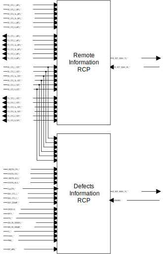

ODU Ring Control Port Block (ODU_RCP) TO BE UPDATED NEXT ISSUE TBD Figure: RCP Top Level Block Diagram  The RCP block has two interfaces: RI_RCP(Remote Information Ring Control Port) and DI_RCP (Defects Information Ring Control Port). These interfaces are used to communicate backward indications and defects/alarms off-chip.